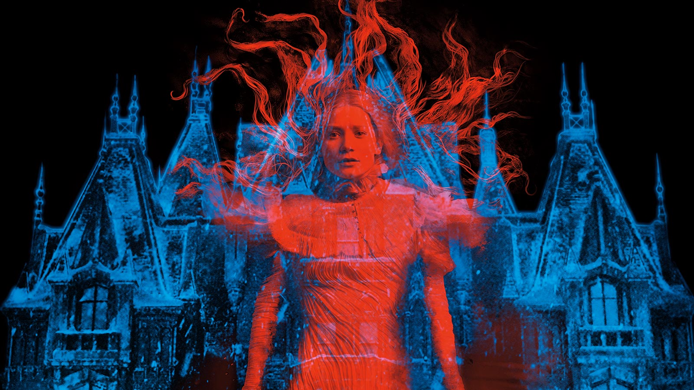
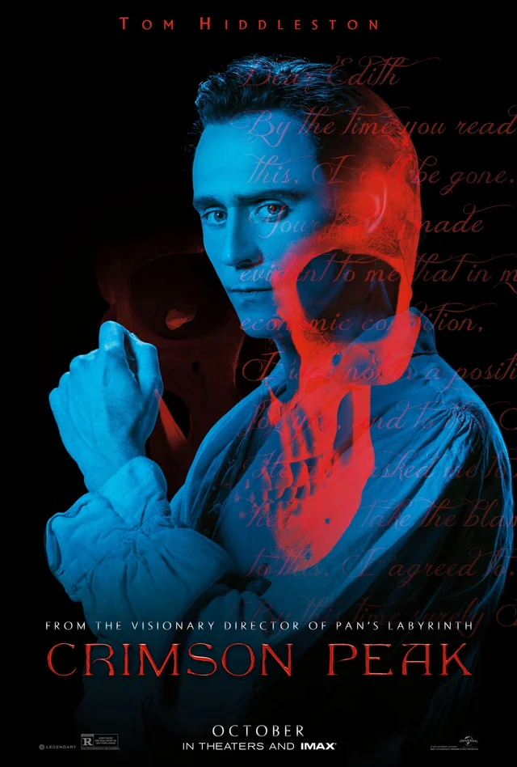
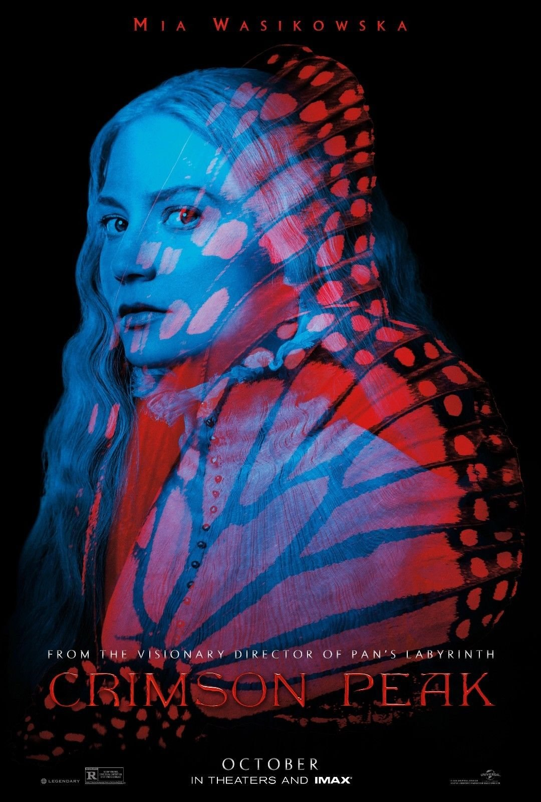
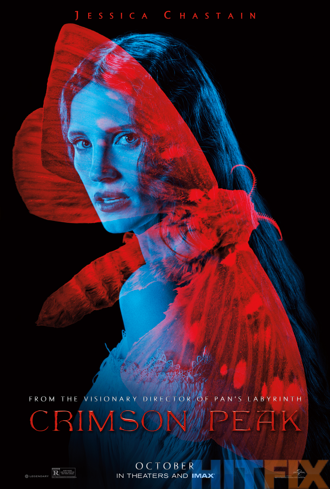

From Academy Award-winning director Guillermo del Toro—the visionary behind Pan’s Labyrinth and The Shape of Water—comes a haunting tale of love, betrayal, and ghosts that never rest: Crimson Peak.
Starring Mia Wasikowska, Tom Hiddleston, and Jessica Chastain, Crimson Peak follows Edith Cushing, a young American writer who marries a mysterious English aristocrat and is swept away to a remote, crumbling mansion buried in secrets—and soaked in blood-red clay.
Trying to escape the grief of her past, Edith finds herself trapped in a house that remembers everything. As the walls bleed and whispers echo through the halls, she begins to uncover the truth: some houses are born bad, and some ghosts don’t come to warn—but to claim.
“Ghosts are real. This much I know.”
A gothic romance drenched in dread, Crimson Peak is a stunning descent into the dark heart of human desire, featuring tour-de-force performances from Hiddleston and Chastain in roles where nothing is as it seems.
Written by Guillermo del Toro and Matthew Robbins, Crimson Peak features the masterful work of del Toro’s trusted collaborators: cinematographer Dan Laustsen, editor Bernat Vilaplana, and Oscar-winning costume designer Kate Hawley, with an original score by Fernando Velázquez.
Legendary Pictures and Universal Pictures present a Guillermo del Toro film: Crimson Peak.

Baronet Thomas Sharpe is a man caught between two worlds: the crumbling grandeur of his aristocratic lineage and the promise of a new beginning far from it. With his refined manner and haunted gaze, Thomas exudes charm tinged with melancholy. Beneath his polished exterior lies a deeply conflicted soul, torn between loyalty to his family and his growing love for Edith. As secrets unravel, Thomas must confront the darkness he's helped conceal—and choose whether to uphold a legacy built on deception or seek redemption through sacrifice.

A sharp-witted and independent American heiress, Edith Cushing is a budding author with a fascination for the supernatural and a heart still scarred by loss. Determined to forge her own path in a world that underestimates her, she falls for a mysterious English baronet and is drawn into a whirlwind romance that takes her far from home. But as the shadows lengthen at Allerdale Hall, Edith’s strength and spirit are tested by forces both living and dead.

Elegant, enigmatic, and unyielding, Lucille Sharpe is the keeper of Allerdale Hall and of the secrets that fester within its walls. Fiercely protective of her brother and bound to the decaying estate that defines her, Lucille moves with cold precision and speaks with unsettling calm. But beneath her composed exterior lies a volatile storm of obsession, grief, and rage. Lucille is both a tragic figure and a chilling force, embodying the film’s most gothic themes—of love turned twisted, of history that refuses to be buried, and of a house that lives through her.
Guillermo del Toro Gómez (born 9 October 1964) is a Mexican filmmaker, author, and artist. His work has been characterized by a strong connection to fairy tales, gothicism and horror often blending the genres, with an effort to infuse visual or poetic beauty in the grotesque.
He has had a lifelong fascination with monsters, which he considers symbols of great power. Known for pioneering dark fantasy in the film industry and for his use of insectile and religious imagery, his themes of Catholicism, and celebrating imperfection, underworld motifs, practical special effects, and dominant amber lighting.
| Year | Title | Distributor |
|---|---|---|
| 1992 | Cronos | October Films |
| 1997 | Mimic | Miramax Films |
| 2001 | The Devil's Backbone | Warner Bros. Pictures / Sony Pictures Classics |
| 2002 | Blade II | New Line Cinema |
| 2004 | Hellboy | Sony Pictures Releasing |
| 2006 | Pan's Labyrinth | Warner Bros. Pictures |
| 2008 | Hellboy II: The Golden Army | Universal Pictures |
| 2013 | Pacific Rim | Warner Bros. Pictures |
| 2015 | Crimson Peak | Universal Pictures |
| 2017 | The Shape of Water | Fox Searchlight Pictures |
| 2021 | Nightmare Alley | Searchlight Pictures |
| 2022 | Pinocchio | Netflix |
| 2025 | Frankenstein | — |